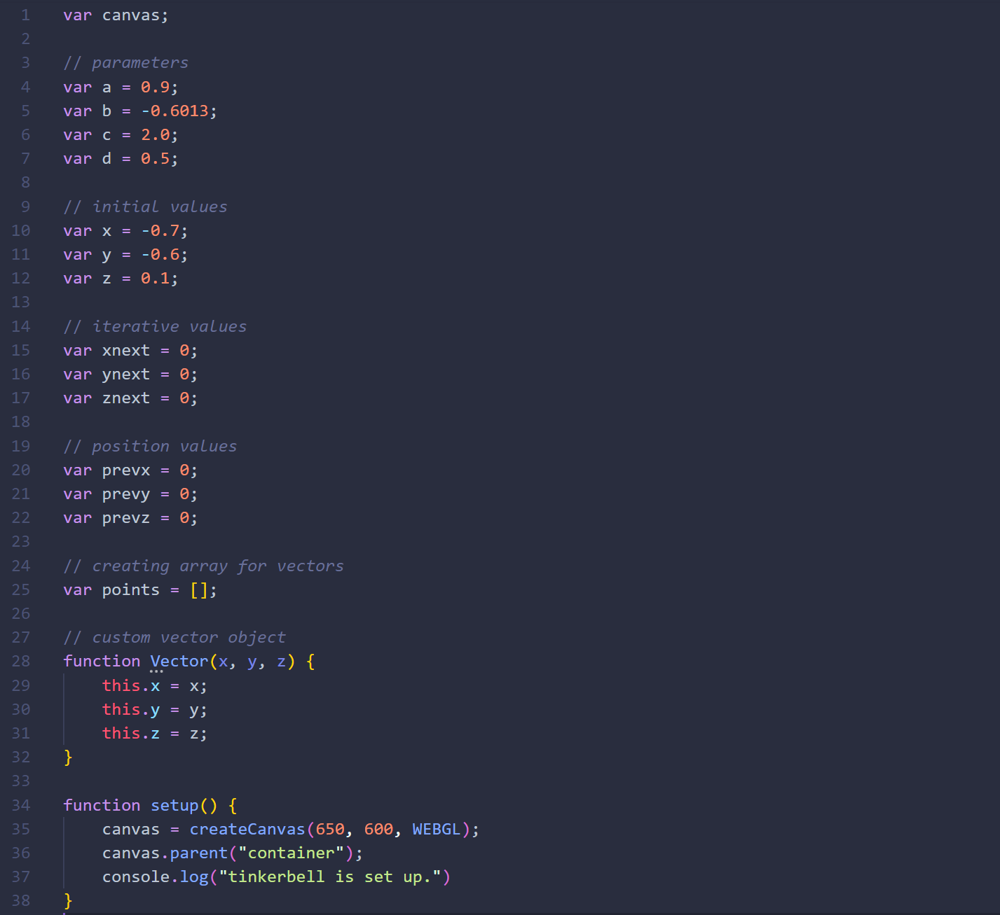
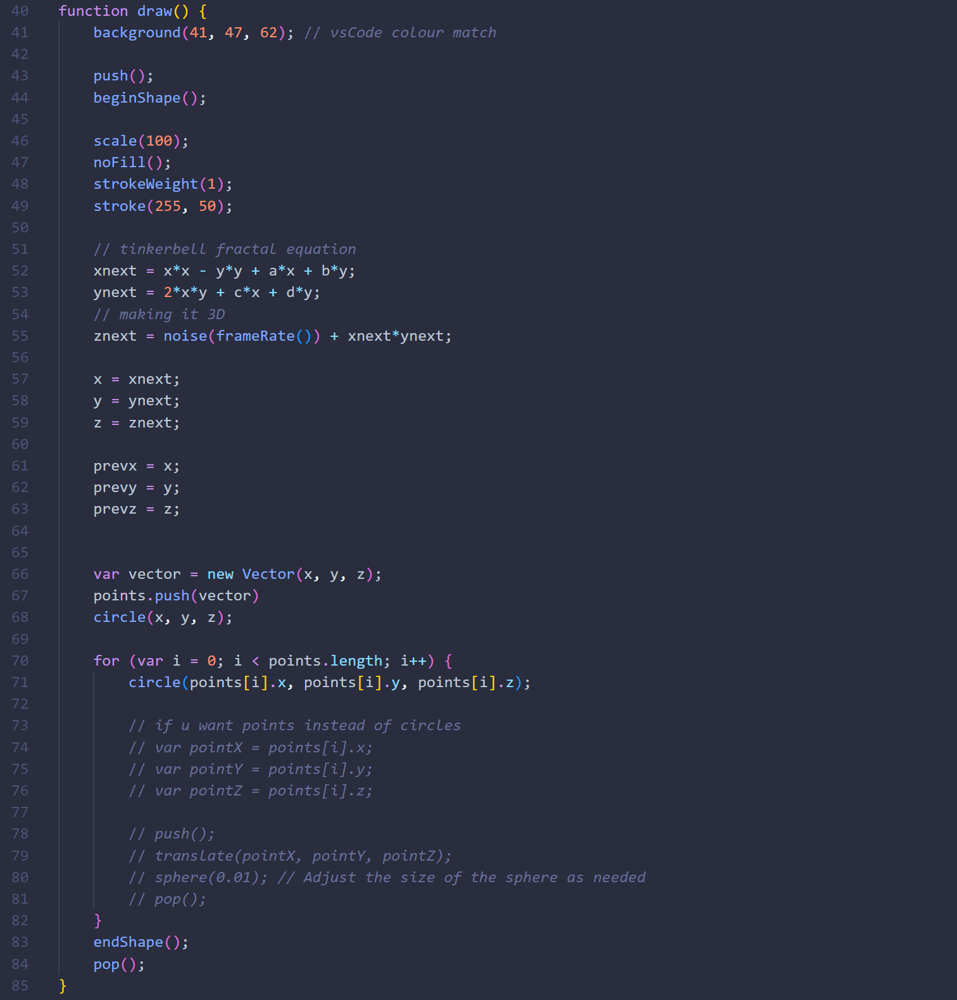

The tinkerbell attractor is a chaotic map that after a number of iterations will always return to its starting position. It gets its name from the flying movement Tinker Bell does over the castle at the beginning of Disney movies. This sketch's shape is similar to that of a hydrothermal vent on the seafloor.
It's a 4 parameter system, generatively plotted above at every iteration xn, yn (in the code written as xnext, ynext). I originally wrote this code in Processing and so there was some tweaking involved to port it to JavaScript. A remnant of this is the attempt to make it 3-dimensional, although that is not clear in the visualiser. Overall, it was a relatively simple exercise that I'm sure I can reuse.
 